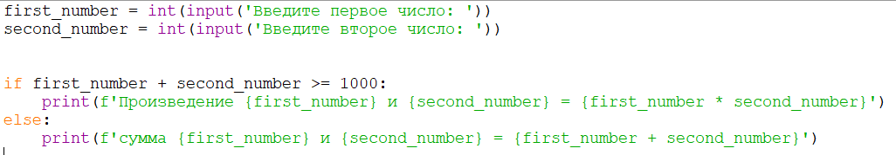
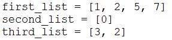
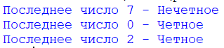
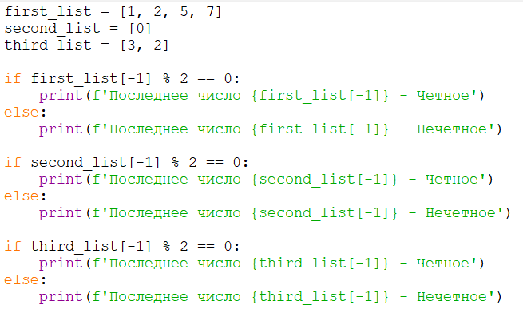
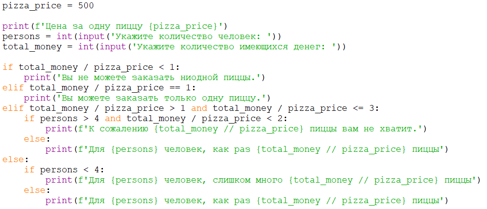

1
Сумма или произведение
легкоавтопроверка
Создай программу, которая выводит сумму двух чисел, если их сумма меньше 1000, иначе — их произведение.
Показать ответ (сначала попробуй сам!)

Программа начинает принимать решения: учимся сравнивать значения и писать условия if / elif / else.
Создай программу, которая выводит сумму двух чисел, если их сумма меньше 1000, иначе — их произведение.

Создай программу, которая выдаёт чётность или нечётность последнего числа в списке.



Создай программу, которая выдаёт количество необходимых пицц в зависимости от количества человек и количества денег. Количество человек и денег задаётся с помощью input().

Пользователь вводит год. Выведи «високосный» или «обычный».
Год високосный, если он делится на 4, но не делится на 100. Исключение: годы, которые делятся на 400, — тоже високосные.
Пример работы
Введи год: 2024 високосный
Пригодятся операторы %, and, or.
year = int(input('Введи год: '))
if (year % 4 == 0 and year % 100 != 0) or year % 400 == 0:
print('високосный')
else:
print('обычный')Пользователь вводит цвет светофора. Программа подсказывает, что делать:
красный → Стойжёлтый → Ждизелёный → Идиcolor = input('Какой свет горит? ').lower()
if color == 'красный':
print('Стой')
elif color == 'жёлтый' or color == 'желтый':
print('Жди')
elif color == 'зелёный' or color == 'зеленый':
print('Иди')
else:
print('Такого цвета нет')Пользователь вводит количество баллов от 0 до 100. Выведи оценку:
Пример работы
Сколько баллов? 80 Оценка: 4
points = int(input('Сколько баллов? '))
if points >= 90:
print('Оценка: 5')
elif points >= 75:
print('Оценка: 4')
elif points >= 50:
print('Оценка: 3')
else:
print('Оценка: 2')Пользователь вводит три числа. Выведи самое большое из них, не используя функцию max().
Пример работы
Первое: 3 Второе: 9 Третье: 4 Самое большое: 9
a = int(input('Первое: '))
b = int(input('Второе: '))
c = int(input('Третье: '))
biggest = a
if b > biggest:
biggest = b
if c > biggest:
biggest = c
print('Самое большое:', biggest)